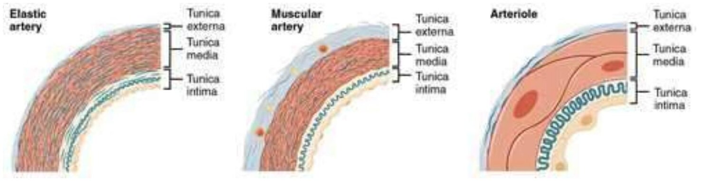
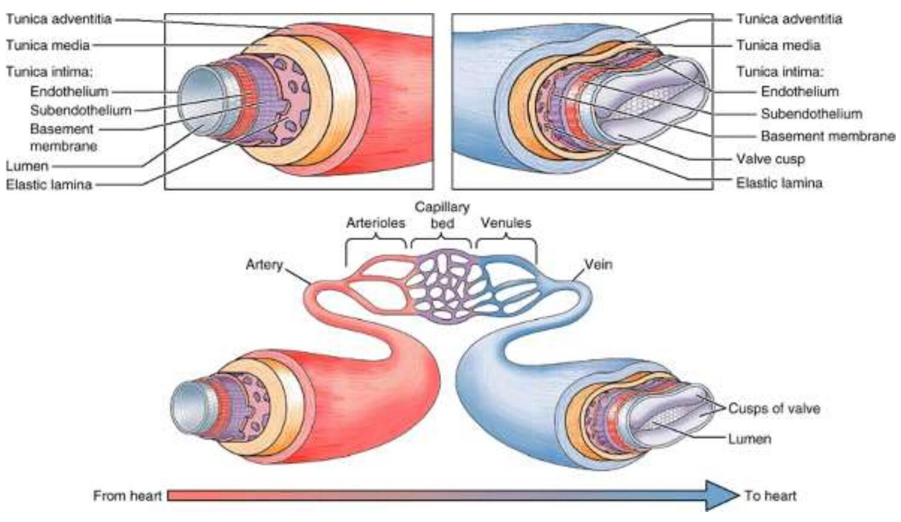
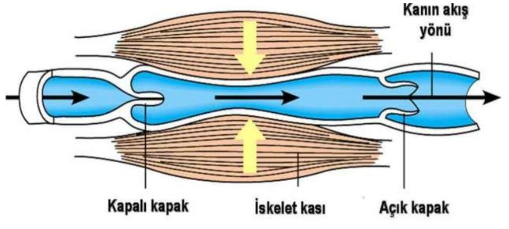
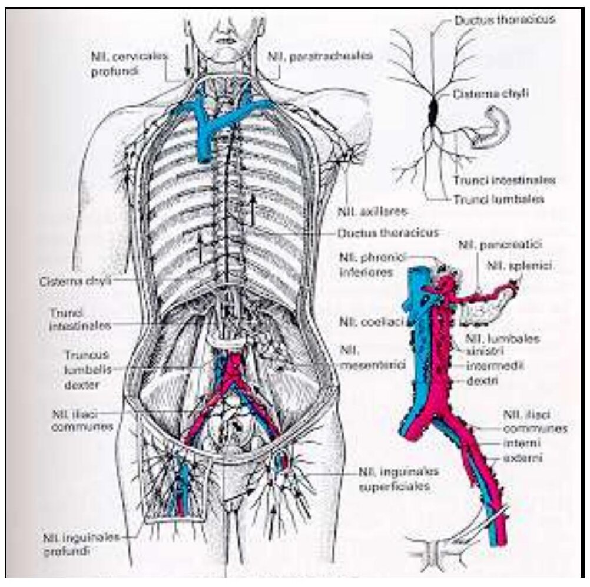
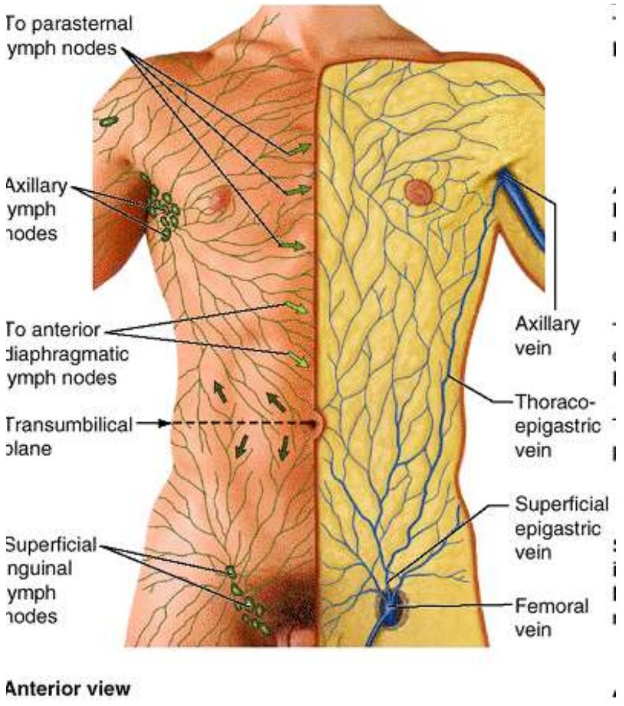

Bölüm 1 · Systema cardiovasculare
Kalbin ve tek tek damarların anatomisine geçmeden önce sistemin mantığını kurmak gerekir. Kan neden bu kadar farklı damar tipinden geçer? Arter ile veni ayıran şey içindeki kan mıdır, yön müdür? Kapiller neden bazı dokularda yoktur? Lenf nereden çıkar, nereye döner? Bu bölüm bu soruları yanıtlar ve kitabın geri kalanında kullanılacak kavramları tanımlar.
Dolaşım sistemi (systema circulatorium), içinde kan ve lenf dolaşan kapalı bir boru ağı ile bu ağın merkezindeki pompadan, kalpten (cor; Yunanca cardia) oluşur. Sunumun sınıflandırmasıyla üç bileşeni vardır: kan taşıyan damarlar (arterler, kapillerler, venler), lenf taşıyan damarlar ve kalp. Kalp ile kan damarlarının birlikte oluşturduğu kısma kardiyovasküler sistem (systema cardiovasculare) denir.
Damarlar işlevlerine göre ikiye ayrılır. Bir organın kendi dokusunu besleyen damarlara vasa privata, organın vücut için yaptığı işe hizmet eden damarlara vasa publica denir. Akciğerde aa. pulmonales kanı gaz alışverişi için getirir (vasa publica), aa. bronchiales ise bronş duvarını besler (vasa privata). Karaciğerde v. portae hepatis işlenecek kanı getirir (publica), a. hepatica propria karaciğer dokusunu besler (privata). Kalbin kendisi de bu ayrımın bir örneğidir: boşluklarından geçen kan kalp kasını beslemez. Kalp kası kendi damarlarıyla, koroner arterlerle beslenir (Bölüm 4).
Kan vücutta art arda bağlı iki devre çizer (Şekil 1.1):
Bu şemadan iki tanım çıkar. Birincisi, kalbin sağ yarısı (sağ atriyum ve sağ ventrikül) venöz kanla, sol yarısı (sol atriyum ve sol ventrikül) arteriyel kanla ilgilidir. Bu yüzden bunlara sırasıyla sağ kalp ve sol kalp denir. İkincisi, arter ve ven tanımı kanın içeriğine değil, akımın yönüne göre yapılır. Arter kanı kalpten perifere götüren, ven periferden kalbe getiren damardır. Bu yüzden truncus pulmonalis ve aa. pulmonales arter olduğu hâlde venöz kan, vv. pulmonales ven olduğu hâlde oksijenli kan taşır. Fetüste aa. umbilicales'in venöz, v. umbilicalis'in oksijenli kan taşıması da aynı kuralın sonucudur (Bölüm 6).
Kanı damarlarda ilerleten şey kalbin kasılmasıyla oluşan basınç farkıdır. Basınç kalpten uzaklaştıkça ve damarlar dallanıp daraldıkça düşer, çünkü her basamakta sürtünme direnci enerjinin bir kısmını tüketir. Sağ atriyuma dönen kanın basıncı sıfıra yakındır. Bu yüzden venöz dönüşe ek mekanizmalar yardım eder (1.5). Kanın çoğu da arterlerde değil venlerdedir (Şekil 1.2), çünkü ince ve esnek ven duvarı düşük basınçta bile büyük hacim alır. Venler dolaşımın kapasitans (hazne) damarlarıdır. Kanamada sempatik sistemin venleri daraltması bu hazneden kalbe kan aktarır.
Arterler çaplarına ve duvarlarının baskın dokusuna göre üç gruba ayrılır. Grupların her birinin yapısı, dolaşımın o noktasında çözmesi gereken soruna göre şekillenmiştir.
Elastik (geniş) arterler. Aorta ascendens, arcus aortae, aorta descendens ve aortanın büyük dalları (truncus brachiocephalicus, aa. carotides communes, aa. subclaviae, aa. iliacae communes) ile truncus pulmonalis bu gruptadır. Orta katmanlarında düz kastan çok elastik lif tabakaları bulunur, çünkü kalp kanı yalnızca sistolde atar. Sistolde atılan kanın bir kısmı aorta duvarını gerer. Diyastolde gerilmiş duvar geri yaylanır ve kanı ileri itmeye devam eder. Sunumun deyişiyle elastik lifler diyastol sırasında kan basıncının devamlılığını sağlar ve kesik kesik pompalanan kan periferde sürekliye yakın akar. Yaşla duvar sertleşince bu tampon kaybolur: sistolik basınç yükselir, diyastolik basınç düşer.
Musküler (orta boy) arterler. A. brachialis, a. radialis, a. femoralis, aa. coronariae gibi organlara kan dağıtan arterlerdir. Orta katmanları kalın bir düz kas tabakasıdır. Görevleri kanı organlar arasında paylaştırmaktır: düz kasın kasılıp gevşemesi hangi bölgeye ne kadar kan gideceğini ayarlar. İç ve dış elastik zarlar (lamina elastica interna ve externa) en belirgin hâllerini bu arterlerde alır.
Arterioller (küçük arterler). Kapillerlere kadar incelen, duvarında bir-iki kat düz kas bulunan son arter dallarıdır. Dolaşımın direnç damarlarıdır: arteriyel basıncın en büyük düşüşü burada olur. Direnç yarıçapın dördüncü kuvvetiyle ters orantılı olduğu için arteriolün yarıçapı yarıya inerse direnç 16 kat artar.

Arterlerin yerleşim kuralları. Sunum üç kural sayar. (1) Arterler çoğunlukla derin yerleşimlidir ve eklemlerin fleksör tarafından geçer (a. axillaris, a. brachialis, a. poplitea). Böylece travmadan korunur, eklem büküldüğünde gerilmek yerine gevşerler. (2) Kasların arasında, fasyalara dayanarak, bağ dokusu kılıfı içinde ilerlerler, böylece kasılan kas arteri ezmez (boyunda vagina carotica, Bölüm 8.1). (3) Biçimi değişen organların arterleri kıvrıntılıdır: büyüyen uterusun a. uterina'sı, mimik kaslarıyla oynayan yüzün a. facialis'i, hareketli dilin a. lingualis'i. Organ uzadığında kıvrımlar açılır, damar gerilmez.
Anastomoz ve uç arter. İki arterin kapillere varmadan birleşmesine anastomoz denir. Anastomoz bir arter tıkandığında kanın başka yoldan gelmesini (kollateral dolaşım) sağlar: eklem çevresindeki arter ağları, dudak çevresindeki arter halkası (Bölüm 8.5), beyin tabanındaki halka. Yeterli anastomozu olmayan, tıkandığında beslediği bölgenin ölümüne (infarkt) yol açan arterlere uç arter denir. Retinanın a. centralis retinae'si gerçek bir uç arterdir. Koroner arterler ise anatomik olarak anastomoz yapsalar da bu anastomozlar ani bir tıkanmayı karşılayamayacak kadar incedir. Bu yüzden koroner arterler fonksiyonel uç arter olarak davranır (Bölüm 4.4).
Kapillerler (vasa capillaria) arteriollerle venüller arasındaki, çapı bir alyuvar kadar (5-10 µm), duvarı yalnızca endotel ve bazal zardan oluşan damarlardır. Madde alışverişi yalnızca bu ince duvardan olabilir: oksijen ve besinler arteriyel uçta dokuya geçer, artıklar ve CO₂ venöz uçta kana döner. Duvar yarı geçirgendir: suya, kristaloidlere ve bazı plazma proteinlerine izin verir, büyük molekülleri ve hücreleri tutar.
Mikrodolaşımın düzeni. Arteriol ile kapiller yatak arasında metarteriol bulunur. Metarteriolün duvarındaki düz kas kesintisiz bir tabaka oluşturmaz, aralıklı hücreler hâlinde dağılmıştır. Metarteriolden çıkan gerçek kapillerlerin başlangıcında, her birinin ağzını saran tek bir düz kas halkası vardır: prekapiller sfinkter. Metarteriol kapiller yatağın içinden bir "işlek kanal" (thoroughfare channel) olarak devam eder ve venüle açılır. Kan her an bütün kapillerlerden geçmez: sfinkterler ve metarterioller dakikada birkaç kez açılıp kapanarak kanı yatağın farklı bölümlerine sırayla gönderir. Bu aralıklı kasılmaya vazomosyon denir. Vazomosyonu belirleyen en önemli etken dokunun oksijen basıncıdır: doku oksijeni düştükçe sfinkterler daha uzun süre açık kalır, kapillerlerden geçen kan artar (2023-2024 ve 2024-2025 fizyoloji sorularında "vazomosyonu belirleyen en önemli faktör" olarak doku O₂ basıncı cevaplandı; aynı sınavlarda metarteriolün prekapiller sfinktere sahip olduğu da soruldu). Endotelden salınan nitrik oksit (NO) bu damarlarda başlıca gevşetici (vazodilatör) maddedir.
Kapiller tipleri. Kapiller duvarının geçirgenliği organın ihtiyacına göre değişir. Üç tip vardır:
| Tip | Duvar yapısı | Bulunduğu yerler ve nedeni |
|---|---|---|
| Kesintisiz (sürekli) | Endotel hücreleri sıkı bağlantılarla (zonula occludens) birleşir, bazal zar tamdır. Madde geçişi pinositik veziküllerle ve hücreler arasından sınırlı olur. | Kas, akciğer, deri, bağ dokusu, merkezi sinir sistemi. Beyinde çok sıkı bağlantılar kan-beyin bariyerini oluşturur. |
| Pencereli (fenestralı) | Endotelde ince diyaframla örtülü ya da açık delikler (fenestralar) vardır. Bazal zar tamdır. | Böbrek glomerülü, endokrin bezler, bağırsak villusları: hızlı ve bol sıvı ya da hormon geçişi gereken yerler. |
| Sinüzoidal (kesintili) | Çapı geniş, düzensiz, endotel hücreleri arasında açıklıklar ve kesintili bazal zar vardır. Duvarında fagositik hücreler bulunur. | Karaciğer (Kupffer hücreleri), dalak, kemik iliği, bazı endokrin bezler. Büyük moleküllerin ve hücrelerin geçmesi ya da yaşlı hücrelerin yakalanması gereken yerler. |
Kapillerler metabolizması yüksek dokularda (retina, endokrin organlar, kas) en sıktır. Kalp kapakları, kornea, lens ve kıkırdak kapiller içermez, çevrelerindeki sıvıdan difüzyonla beslenir. Kornea ve lensin saydamlığı bu damarsızlığa bağlıdır, kıkırdağın ve kapakların iyileşme yeteneğinin düşüklüğü de. Sunum kapillerlerin üç işini sayar: madde alışverişi, bazı metabolik olaylar (örneğin akciğer endotelinde anjiyotensin I'in II'ye çevrilmesi) ve sağlam endotelin pıhtılaşmayı engellemesi (antitrombojenik işlev).
Kapillerler dışındaki bütün damarların duvarı içten dışa üç katmandan oluşur (Şekil 1.4). Katmanların kalınlığı ve içeriği damar tipine göre değişir, ama düzen aynıdır:

Sunumdaki ölçülerde duvar kalınlığının çapa oranına dikkat edin: arteriolün duvarı çapına göre çok kalındır (direnç ve kontrol için), kapillerinki yok denecek kadar incedir (alışveriş için), ven aynı çaptaki arterden çok daha ince duvarlıdır.
| Damar | Ortalama iç çap | Duvar kalınlığı | Duvarın baskın öğesi |
|---|---|---|---|
| Elastik arter (aorta) | 1,5 cm | 1,0 mm | Elastik lif tabakaları |
| Musküler arter | 6,0 mm | 1,0 mm | Düz kas |
| Arteriol | 37 µm | 6 µm | Bir-iki kat düz kas |
| Kapiller | 9 µm | 0,5 µm | Yalnızca endotel ve bazal zar |
| Venül | 20 µm | 1 µm | Endotel, birkaç perisit |
| Ven | 5,0 mm | 0,5 mm | İnce media, kalın adventitia |
Venlerde basınç düşük olduğu için duvar incedir ve katmanlar belirgin değildir. Canlıda koyu mor renklidir, nabız atmazlar, boşken yassılaşırlar ve kalbe yaklaştıkça dal alarak kalınlaşırlar.
Venleri arterlerden ayıran en önemli yapı, intimanın iki ya da üç yarım ay biçimli kıvrımından oluşan kapaklardır (valvulae venosae). Kan kalbe doğru akarken yapraklar duvara yaslanır, geri akmaya kalktığında cepler dolup yaprakları kapatır. Kapaklar en çok alt ekstremite venlerinde bulunur. Buna karşılık VCS ve VCİ, v. portae hepatis, beynin dural sinüsleri ve vv. pulmonales kapaksızdır. Yüzün venlerinde de kapak yok denecek kadar azdır. Bu son ayrıntının önemli bir klinik sonucu vardır: yüz venlerinde kan iki yönde akabilir ve yüzdeki bir enfeksiyon kafa içine taşınabilir (Bölüm 9.3).
Venöz dönüşü sağlayan mekanizmalar. Kapillerden çıkan kanın birkaç mmHg'lik basıncı, ayakta duran birinde ayaktaki kanı kalbe çıkarmaya yetmez. Kanı yukarı taşıyan güçler şunlardır:

Yüzeyel, derin ve kommunikan venler. Ekstremitelerde üç tip ven vardır. Yüzeyel venler deri altı yağ dokusunda, fasyanın üzerinde ilerler ve arterlerle birlikte seyretmez. Derin venler fasyanın altında, kas bölmelerinin içinde arterlere eşlik eder. Ekstremitelerin venöz akımının yaklaşık %90'ını derin venler taşır. Kommunikan (perforan) venler fasyayı delerek yüzeyel venleri derin venlere bağlar. Kapakları kanın yalnızca yüzeyden derine akmasına izin verir. Bu düzenin mantığı şudur: kas pompası yalnızca fasyanın altındaki derin venleri sıkabilir. Yüzeyel venlerdeki kanın pompadan yararlanması için önce derine aktarılması gerekir.
Sınavda en çok sorulan örnekler şunlardır:
Varis. Kommunikan venlerin ya da v. saphena magna'nın v. femoralis'e açıldığı yerdeki kapağın yetmezliğinde kas pompasının derin venlerde yarattığı yüksek basınç yüzeyel venlere geri iletilir. İnce duvarlı yüzeyel venler genişler, uzar ve kıvrıntılı bir görünüm alır.
Sunum sonraki derslerde sürekli kullanılacak terimleri de tanımlar:
| Terim | Tanım ve mekanizma |
|---|---|
| Anevrizma | Zayıflamış arter duvarının kalıcı genişlemesi (bütün çevre: fuziform; kese biçiminde: sakküler). Genişleyen damarda duvar gerilimi artar (Laplace), bu da genişlemeyi ve rüptür riskini artırır. |
| Hiperemi | Bir dokuya gereğinden fazla kan gelmesi. Arteriollerin genişlemesiyle (aktif, örneğin iltihap ya da egzersiz) ya da venöz akımın engellenmesiyle (pasif, konjesyon) olur. |
| İskemi | Dokunun kan desteğinin ihtiyacına yetmemesi. Uzar ya da ağırlaşırsa hücre ölümüne (infarkt) varır. |
| Trombüs | Damar ya da kalp içinde, canlıda oluşmuş ve duvara yapışık pıhtılaşmış kan kitlesi. |
| Emboli | Kanda dolaşarak bir damarı tıkayan pıhtı, yağ ya da hava kabarcığı. Bacak venlerinde kopan bir trombüs sağ kalpten geçip a. pulmonalis'i tıkar (pulmoner emboli, Bölüm 7.4). |
| Flebit / tromboflebit | Ven duvarının iltihabı flebittir. Flebitin ardından ven duvarında trombüs gelişirse tromboflebit adını alır. |
| Varis | Duvarı zayıflamış, genişlemiş ve kıvrıntılı ven (1.5). |
Nabız, her atımda arter duvarında oluşan basınç dalgasının elle hissedilmesidir. Arter ancak yüzeye yakın geçtiği ve altında bastırılabileceği sert bir zemin bulunduğu yerlerde hissedilir:
| Arter | Nabzın alındığı yer |
|---|---|
| A. temporalis superficialis | Kulağın önünde, tragusun hemen önünde, arcus zygomaticus'un üzerinde |
| A. facialis | Mandibulanın alt kenarında, m. masseter'in ön kenarının hemen önünde |
| A. carotis communis | Cartilago thyroidea'nın üst kenarı düzeyinde, m. sternocleidomastoideus'un ön kenarında, trakeanın yanındaki olukta (Bölüm 8.1) |
| A. subclavia | Fossa supraclavicularis major'da, klavikulanın orta noktasının üstünde, birinci kaburgaya bastırılarak |
| A. axillaris | Fossa axillaris'te, humerus başına ve boynuna bastırılarak |
| A. brachialis | Kolun medialinde sulcus bicipitalis medialis'te; dirsekte fossa cubiti'de biseps tendonunun medialinde (tansiyon ölçümünde steteskop buraya konur) |
| A. radialis | Ön kolun distalinde, m. flexor carpi radialis tendonu ile m. brachioradialis tendonu arasında, radiusa bastırılarak (en sık kullanılan nokta); ayrıca fovea radialis'te ("enfiye çukuru") |
| A. femoralis | Lig. inguinale'nin orta noktasının 2-3 cm altında, trigonum femorale'de |
| A. poplitea | Diz hafif fleksiyondayken fossa poplitea'nın derininde (derin olduğu için en zor alınan nabızdır) |
| A. tibialis posterior | Malleolus medialis'in arkasında |
| A. dorsalis pedis | Ayak sırtında, birinci ve ikinci metatarsal kemikler arasında, m. extensor hallucis longus tendonunun hemen lateralinde |
A. dorsalis pedis nabzı 4. metatarsal aralıkta değil, 1. metatarsal aralığın proksimalinde, başparmak ekstansör tendonunun lateralinde alınır. Arter bu aralıktan tabana geçerek arcus plantaris profundus'a katılır. Derleme S67'de "a. dorsalis pedis: 4. metatarsal aralık distalinden" ifadesi yanlış seçenekti. Aynı soruda a. radialis için verilen "m. flexor carpi radialis ile m. brachioradialis tendonları arası" ve a. femoralis için verilen "lig. inguinale'nin 2-3 cm aşağısı" doğrudur.
Lenf nereden çıkar? Kapillerin arteriyel ucunda hidrostatik basınç plazmayı dokuya iter, venöz uçta plazma proteinlerinin onkotik basıncı sıvıyı geri çeker. Geri dönen sıvı çıkandan biraz azdır ve sızan proteinler kapillere dönemez. Bu fazlalık (günde 2-4 litre) dokuda kalsaydı ödem gelişirdi. Lenfatik sistem onu toplayıp venöz dolaşıma geri taşır. Doku sıvısı lenf kapillerine girince lenf adını alır.
Lenf alyuvar içermediği için beyaz sarımsıdır. Serumuna benzer, ama tuz ve albumini kandakinden azdır. Başlangıçta hücresizdir, düğümlerden geçtikçe lenfosit kazanır. Pıhtılaşır ama geç pıhtılaşır. İnce bağırsağın lenf kapillerine lakteal denir. Emilen yağlar şilomikron hâlinde laktellere girdiği için buradaki lenf süt beyazıdır ve şilus (chylus) adını alır.
Sistemin bölümleri. Sunuma göre lenfatik sistem dört bileşenden oluşur: (1) dokulardaki hücreler arası aralıklarda başlayan lenf kapilleri, (2) lenf damarlarının yolu üzerine dizilmiş lenf düğümleri, (3) çok sayıda lenfosit içeren lenfatik doku (sindirim kanalı duvarı, dalak, timus, tonsiller) ve (4) dolaşan lenfositler.
Lenf trunkusları ve büyük lenf kanalları. Bölgesel düğümlerden çıkan lenf damarları birleşerek büyük toplayıcı gövdeleri, trunkusları oluşturur: baş ve boyundan truncus jugularis, üst ekstremiteden truncus subclavius, göğüs içi organlardan truncus bronchomediastinalis, alt ekstremite ve pelvisten truncus lumbalis, sindirim kanalından truncus intestinalis. Trunkuslar iki büyük kanala dökülür (Şekil 1.6):
Bu ayrım 2024-2025 sınavında iki ayrı soruda karşınıza çıktı: "hangisi ductus lymphaticus dexter'e dökülür?" sorusunun cevabı sağ truncus (ductus) jugularis'ti, "hangisi ductus thoracicus'a dökülmez?" sorusunun cevabı da yine sağ jugular trunkus ("nodi jugularis dexter") idi. Truncus intestinalis ve iki truncus lumbalis, hangi tarafta olursa olsun, cisterna chyli üzerinden ductus thoracicus'a gider. Kural şudur: sağ baş-boyun, sağ kol ve göğsün sağ yarısı sağ kanala; geri kalan her şey ductus thoracicus'a.

Başlıca bölgesel lenf düğümü grupları. Sunum düğüm gruplarını tek tek anlatmaz, ama kurul sınavları bunları sık sorar. Bilinmesi gereken üç bölge şunlardır:
| Bölge | Düğüm grupları | Drene ettiği alan |
|---|---|---|
| Baş ve boyun | Yüzeyel halka: nll. occipitales, retroauriculares (mastoidei), parotidei, submandibulares, submentales. Nll. cervicales superficiales (v. jugularis externa boyunca) ve nll. cervicales profundi (v. jugularis interna boyunca; en önemlisi nl. jugulodigastricus, "tonsil düğümü") | Baş ve boynun bütün lenfi sonunda derin servikal düğümlerden geçer ve truncus jugularis ile ven açısına gider. "Nl. infrapulmonalis" diye bir boyun düğümü yoktur (2024-2025). |
| Aksilla | Beş grup: nll. pectorales (ön), subscapulares (arka), humerales (lateral), centrales ve apicales. Lenf ilk üç gruptan merkezi gruba, oradan apikal gruba akar. | Üst ekstremite, memenin büyük kısmı ve göbek düzeyinin üstündeki gövde duvarının (ön ve arka) yüzeyel lenfi. Apikal gruptan truncus subclavius çıkar. |
| Kasık | Nll. inguinales superficiales (lig. inguinale'ye paralel yatay grup ve v. saphena magna'nın sonu boyunca dikey grup); nll. inguinales profundi (v. femoralis'in medialinde, en üsttekisi canalis femoralis'teki düğüm) | Yüzeyel grup: göbek düzeyinin altındaki karın duvarı derisi, gluteal bölge, perine, dış genital organlar, anal kanalın alt kısmı ve alt ekstremitenin yüzeyel lenfi. Derin grup yüzeyel gruptan ve alt ekstremitenin derin lenfinden gelir, nll. iliaci externi'ye drene olur. |
Gövde derisinin lenfi için ayırım çizgisi göbekten geçen yatay düzlemdir (transumbilikal düzlem). Bu düzlemin üstündeki deri aksiller düğümlere, altındaki deri yüzeyel inguinal düğümlere drene olur (Şekil 1.8). Bu yüzden göbeğin altında, karın ön duvarı derisindeki bir iltihapta ya da ödemde ilk etkilenen düğümler yüzeyel inguinal düğümlerdir (2023-2024 sınavında bu bilgi iki ayrı soruda soruldu; çeldiriciler derin inguinal, parasternal ve aksiller düğümlerdi). Nll. inguinales profundi ve nll. axillares centrales 2025-2026 uygulama sınavında da gösterildi.

İki klinik not: (1) Aksiller düğümleri çıkarılan ya da ışınlanan bir kolda lenf taşınamaz ve kalıcı şişlik gelişir (lenfödem). (2) Ductus thoracicus sonlanmadan önce sol supraklaviküler düğümlerin yanından geçer. Mide kanseri bu yolla buraya metastaz yapabilir ve sol klavikulanın üstünde ele gelen sert düğüm (Virchow düğümü) karın içi bir kanserin ilk bulgusu olabilir.
Doğru: D. Ductus lymphaticus dexter sağ truncus jugularis, sağ truncus subclavius ve sağ truncus bronchomediastinalis'in birleşmesiyle oluşur. Yalnızca başın ve boynun sağ yarısını, sağ kolu ve göğsün sağ yarısını drene eder.
A, B ve C yanlış: truncus intestinalis ve iki truncus lumbalis diyaframın altındaki bölgelerin lenfini taşır. Taraf fark etmeksizin üçü de cisterna chyli'de birleşir ve ductus thoracicus'u başlatır. "Sağ" truncus lumbalis'in sağ kanala gittiğini düşünmek klasik bir tuzaktır. E yanlış: sol truncus jugularis ductus thoracicus'un son kısmına ya da doğrudan sol ven açısına dökülür. (Sınav kağıdında trunkuslar "ductus" adıyla yazılmıştı.)
Doğru: E. Gövde derisinin yüzeyel lenfi göbekten geçen düzleme göre ikiye ayrılır. Göbeğin altındaki deri yüzeyel inguinal düğümlerin yatay grubuna drene olur.
A ve D yanlış: aksiller düğümler göbeğin üstündeki deriyi drene eder. Ön (pektoral) grup ilk istasyondur, apikal grup ise bütün aksiller grupların son istasyonudur. Göbek altı bir lezyon aksillaya ulaşmaz. B yanlış: derin inguinal düğümler deriden doğrudan değil, yüzeyel düğümlerden ve alt ekstremitenin derin lenf damarlarından lenf alır. Yani ikinci istasyondur. C yanlış: parasternal düğümler a. thoracica interna boyunca dizilir, memenin iç yarısını ve karın ön duvarının derin katmanlarının üst kısmını drene eder.
Doğru: C. V. mediana cubiti dirsek önünde v. cephalica ile v. basilica'yı bağlayan yüzeyel bir vendir. Kalındır, deri altında görülür, yeri sabittir ve kolayca kaymaz. Altındaki aponeurosis bicipitalis onu a. brachialis ve n. medianus'tan ayırır, bu da iğnenin derindeki yapılara ulaşmasını zorlaştırır.
A, B ve D yanlış: vv. brachiales, vv. ulnares ve vv. radiales derin venlerdir. Fasyanın altında, eşlik ettikleri arterin iki yanında çift olarak seyrederler. Deri üstünden görülemezler ve onlara ulaşmaya çalışmak arteri ya da siniri yaralama riskini taşır.
Doğru (yanlış eşleştirme): C. A. dorsalis pedis ayak sırtında birinci ve ikinci metatarsal kemikler arasında, m. extensor hallucis longus tendonunun hemen lateralinde ele gelir. 4. metatarsal aralıkta nabız alınabilecek bir arter yoktur.
A doğrudur: diz hafif bükülünce fossa poplitea'nın tavanını oluşturan fasya gevşer ve derindeki arter femurun arka yüzüne bastırılabilir. B doğrudur: a. radialis'in el bileğinin hemen proksimalindeki yeri burasıdır ve en sık kullanılan nabız noktasıdır. D doğrudur: a. femoralis lig. inguinale'nin orta noktasının biraz altında, trigonum femorale'de yüzeyeldir. E doğrudur: a. tibialis posterior malleolus medialis ile tendo calcaneus arasında ele gelir.
Doğru: E. V. saphena magna ayak sırtındaki venöz kavsin medial ucundan başlar, malleolus medialis'in önünden geçer, bacağın ve uyluğun medialinden yükselir ve hiatus saphenus'tan geçerek v. femoralis'e açılır. Vücudun en uzun venidir.
A yanlış: v. saphena accessoria uyluğun medial ya da lateral yüzünden gelip v. saphena magna'ya katılan kısa bir koldur. B ve C yanlış: v. poplitea ve v. femoralis derin venlerdir, aynı adlı arterlere eşlik ederler. D yanlış: v. saphena parva yüzeyeldir ama bacağın arka-lateralindedir, malleolus lateralis'in arkasından geçer ve fossa poplitea'da sonlanır. Ona n. suralis eşlik eder.
Doğru: A. Gerçek kapillerler metarteriolden ayrılır ve her birinin başlangıcında bir düz kas halkası, prekapiller sfinkter bulunur. Sfinkterin açılıp kapanması kanın kapiller yatağın hangi bölümünden geçeceğini belirler.
B yanlış: metarteriolün düz kası kesintisiz bir katman değil, aralıklı dizilmiş tek tek hücrelerdir. Kesintisiz düz kas arteriolün özelliğidir. C yanlış: metarterioller arteriollerden sonra gelir. Kontrol ettikleri akım kapillerlere giden akımdır. D yanlış: işlek kanal (thoroughfare channel) metarteriolün kapiller yatağın içindeki devamıdır. Metarteriol ondan kan almaz, kanı ona verir. E yanlış: kapak venlerin ve lenf damarlarının özelliğidir. Mikrodolaşımda akımın yönünü kapaklar değil basınç farkı belirler.
Doğru: A. Weibel-Palade cisimleri endotel hücrelerine özgü depo granülleridir. İçlerinde von Willebrand faktörü ve P-selektin bulunur.
B yanlış: vasa vasorum büyük arter ve venlerin adventitiasında bulunan, duvarın dış kısmını besleyen küçük damarlardır. Kapillerlerin duvarı zaten tek kat hücredir ve kendi damarına ihtiyacı yoktur. C yanlış: Purkinje lifleri endokardın endotelin hemen altındaki ince katında (subendotelyal) değil, endokard ile miyokard arasındaki subendokardiyal katta yer alır (Bölüm 5.2). D yanlış: iç elastik lamina en belirgin ve kalın hâlini musküler (orta boy) arterlerde alır. Elastik arterlerde media zaten çok sayıda elastik tabakadan oluştuğu için iç elastik zar bunlardan ayırt edilemez. E yanlış: lenf kapillerlerinde gerçek kapak yoktur, ama toplayıcı lenf damarları çok sayıda kapak içerir.